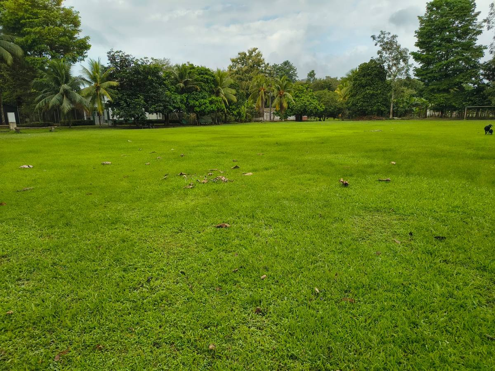
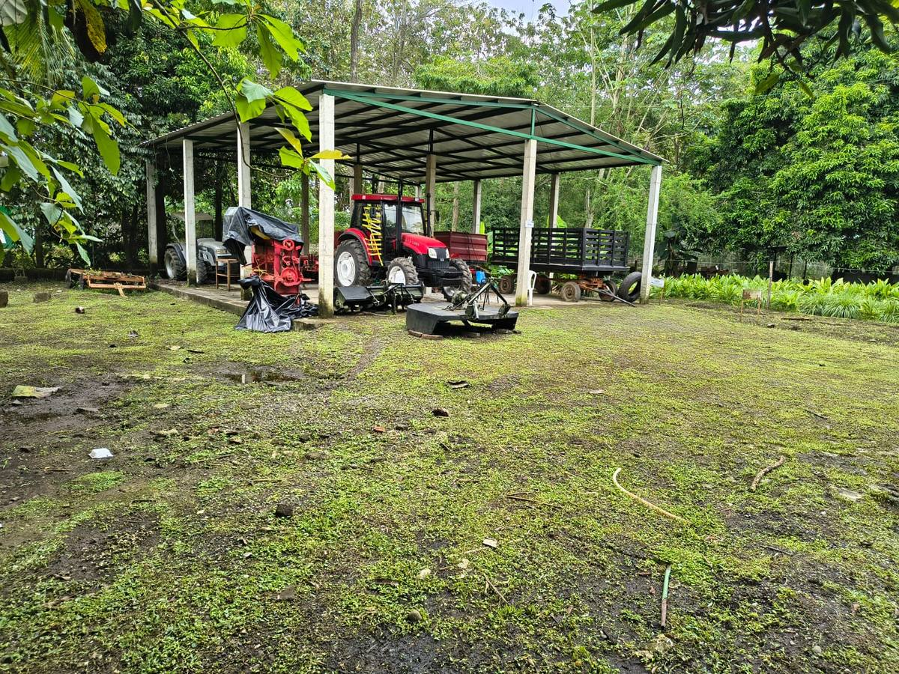
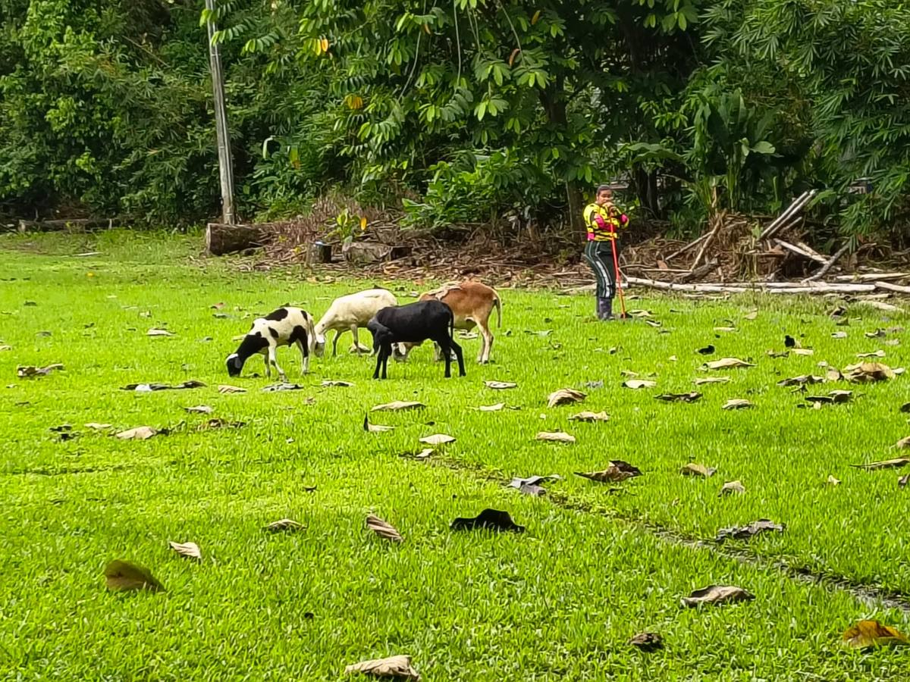
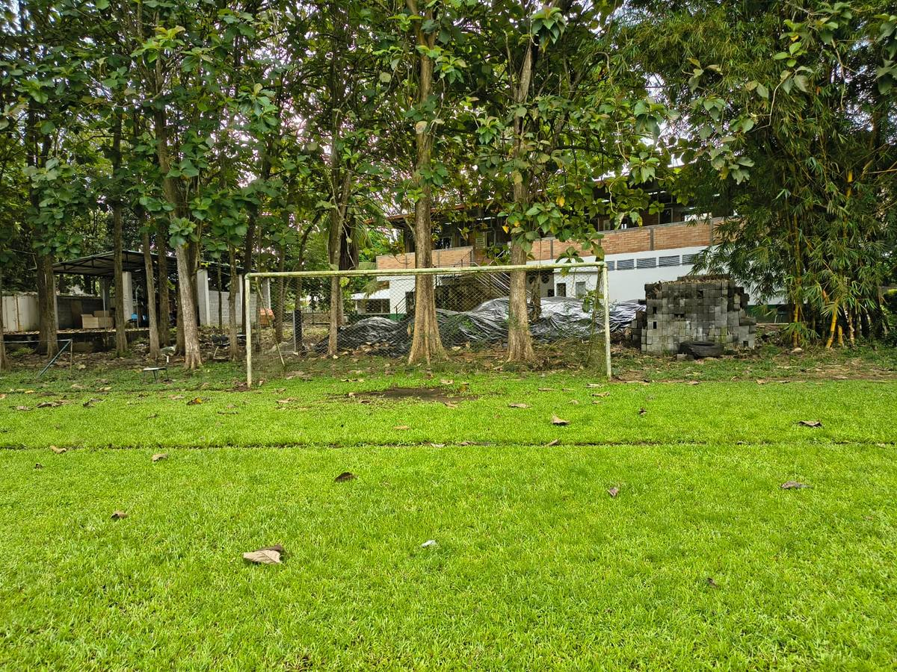

Sección 04
Evidencias
El material fotográfico disponible en la carpeta del proyecto. No incluye todavía imágenes del prototipo ni de sus pruebas.
- Imágenes disponibles
- 4
- Imágenes del prototipo
- Pendientes
- Formato original
- 1600 × 1200 px
- Fecha de captura
- No registrada en los archivos
01
Galería documental
Cada imagen mantiene su proporción original y cuenta con un texto alternativo que describe lo que se ve. Al pulsarla se abre en tamaño mayor.




02
Sobre estas imágenes
- Sin metadatos. Los cuatro archivos no conservan información de fecha, dispositivo ni ubicación, de modo que las capturas no pueden fecharse con precisión.
- Nombres de archivo. Dos archivos conservan una fecha en su nombre, pero se trata del nombre con el que se guardaron y no de un dato verificado. No se usan como fecha de las fotografías.
- Material descartado. La carpeta original contenía tres imágenes ajenas al proyecto: un jugador de fútbol y dos paisajes de montaña. Se conservan en los archivos, pero no se presentan como evidencia porque no documentan el trabajo del equipo.
- Copias de trabajo. Las imágenes que se muestran aquí son copias ligeras creadas para el sitio. Los archivos originales siguen intactos en la carpeta del proyecto.
Texto provisional
Las cuatro imágenes que se muestran son del predio y no documentan el medidor. Cuando el equipo tome fotografías del montaje, de las conexiones y de las pruebas de lectura, esta galería deberá reemplazarlas: son esas imágenes las que sirven como evidencia del prototipo.